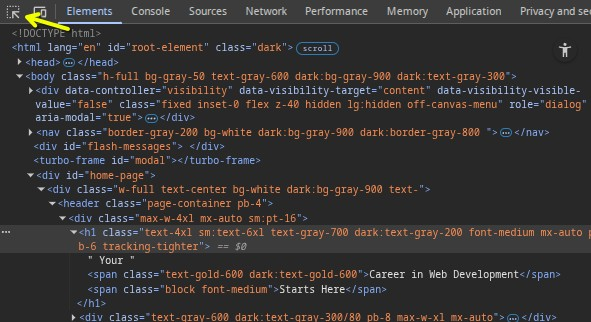
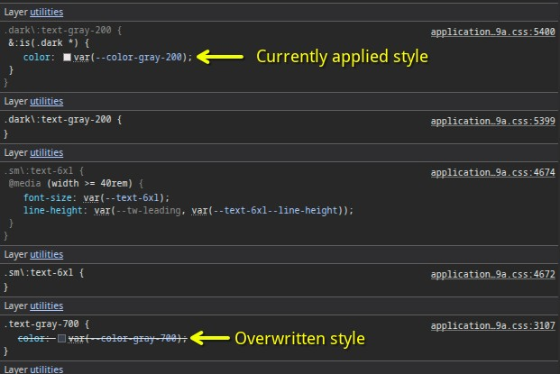

Intoduction
Being able to inspect and debug your HTML and CSS is critical for frontend development. This lesson will take us through the Chrome Dev Tools, which allow you to see detailed information about your elements and CSS rules, as well as assist you in finding and fixing problems in your code.
Lesson overview
This section contains a general overview of topics that you will learn in this lesson.
The Inspector
To open up the inspector, you can right-click on any element of a webpage and click “Inspect” or press F12. Go ahead and do that right now to see the HTML and CSS used on this page.
Don’t get overwhelmed with all the tools you’re now seeing! For this lesson, we want to focus on the Elements and Styles panels.

When an element is selected, the Styles tab will show all the currently applied styles, as well as any styles that are being overwritten (indicated by a strikethrough of the text). For example, if you use the inspector to click on the “Your” in the “Your Career in Web Development Starts Here” header on the TOP homepage , on the right-hand side you’ll see all the styles that are currently affecting the element, as seen below (don’t worry about the var() syntax as that’s irrelevant to this point):

Testing styles in the inspector
The Styles panel also allows you to edit styles directly in the browser. You can click inside of any individual selector to add a new rule or click on an existing attribute or value to alter it. When doing so, the webpage responds with the changes in real-time. This won’t affect the source code in your text editor, but it is extremely useful for quickly testing out various attributes and values without needing to reload the page over and over again.